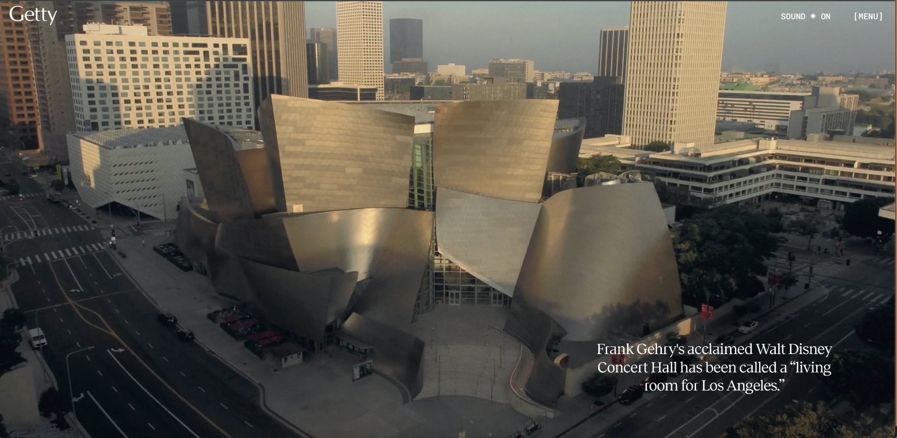
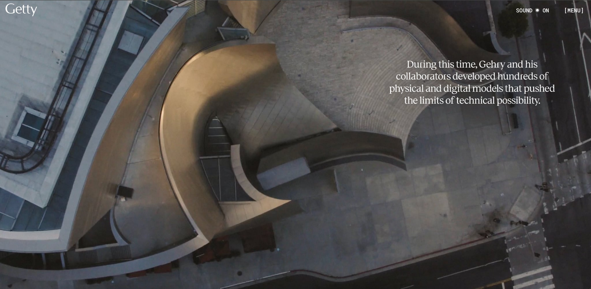
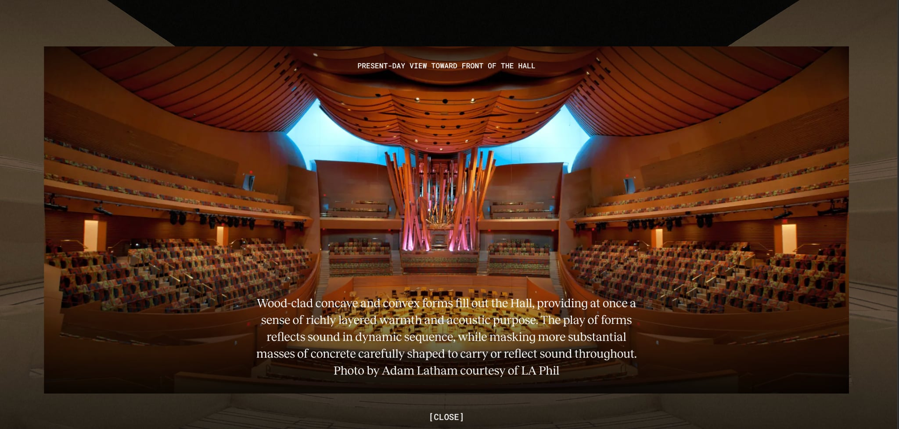
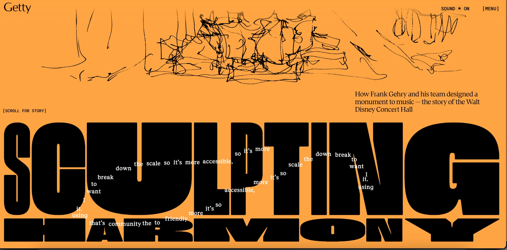
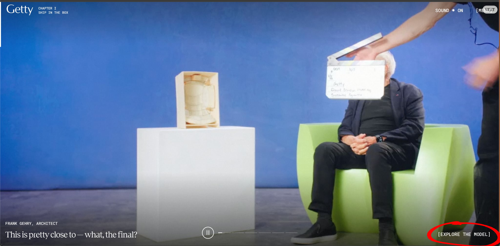

GEHRY GETTY REVIEW
THAO MY NGUYEN_S3905625
RMIT
1) What was the first thing you paid attention to when interacting with the experience?
The first thing that caught my attention was the movement of some sketch lines and then a sketch image appeared, then the elemental (like the title), according to the mouse (a prompt appears as you move the mouse over the text "sculpting harmony"), followed by a combination of visual and auditory elements as a symphony played upon accessing the website, making it look like a digital exhibition.
2) Spend two minutes with the experience and create a list of each of your discrete actions.
Scroll to read the text information and to see the transition between different text sections and the changes in images according to the parallax effect (for example, the direction of the 3d map changes when you scroll and show diference angle of the building).


Watch the video → click the sign [explore the model] to take a look at the 3d map and the model of the building in the completion stage.
Interact with the menu section to move between chapters, and with the sound section to hear what I'm hearing.
3) What part of the experience did you spend the most time engaging with?
Each chapter includes a video and an interactive map. This interactive map helps viewers visualize the concert hall's exterior and interior structures more clearly. It can be zoomed in, zoomed out, and rotated to view the map from different angles. There are also points in the interactive model where clicking them displays a complete version of that section and a brief prompt about the materials and the design's purpose.
4) What was the most common action in your two-minute interaction with the experience?
The most common action in my two-minute interaction with the experience is scrolling. Because this website is built for a “scrollytelling” experience, scrolling is not just about changing text and images; it is an essential action that drives the movement of elements.
5) What is your impression of the intended primary goal of the interactive experience?
The primary goal of the interactive experience is to introduce the story of Walt Disney Concert Hall and celebrate the creative process of Frank Gehry and his team. The website aims to showcase the process by which he and his collaborators developed hundreds of models, as well as the artistic, handcrafted thinking behind their work with commonplace materials. It's also a journey of transforming seemingly impossible ideas into a musical monument.
6) How does the interactive experience communicate this primary goal?
The text that appears as the cursor moves on the first page is engaging, prompting viewers to move their mouse to read the introduction.


As you scroll, the hall is shown from various angles, with information appearing sequentially to reduce eye strain from excessive text. It is divided into small chapters, each representing a phase of the design process. It provides the audience with information, using images from the design stage through completion alongside paragraphs. Each chapter also includes a video and an interactive map to help viewers visualize the hall. This allows readers to learn about the process not only through dry text but also to see the changes through testing and completion.
7) What is your impression of how the experience should be interacted with over time? (For how long and how many different times)
In my opinion, the first time you should spend about 30 minutes browsing the website's content. Then, come back later to explore the interactive elements in the chapters in more detail. Because it's divided into smaller chapters, it's easier to keep track when you can choose the specific chapter you want to read.
8) How does the interactive experience communicate how it should be interacted with over time?
When interacting, some information is displayed immediately, but much more is hidden and only appears when you actively interact with the website. After some research, I discovered that, for example, when you first visit the website, you can move your mouse over the title and a line of information will appear based on your mouse movement. Similarly, in the video section, I had to rewatch it several times to discover that it also has sections like [explore the model] or [read more] that provide a lot more information. These features stimulate the audience's curiosity and encourage them to freely explore the website's interactions if they want to learn more.


9) What other media forms (digital or otherwise) does the experience reference?
This experience includes documentary videos featuring interviews at the beginning of each chapter, and sound that plays throughout. There is also an interactive map and a digital exhibition showcasing images of the models.
10) What does this reference/s communicate to you about how you should act when engaging with your research experience?
Engage to actively interact with visual content and learn through multiple media types. 3D models and actions that require clicking or hovering the mouse to activate, along with materials such as videos and text, force me to observe, analyze, and connect the given information with the images.
11) What does this reference/s communicate to you about how you should feel when engaging with your research experience?
The references, ranging from music to videos and architectural images, inspire respect and spark curiosity about creativity. They create a sense of intrigue, making me want to understand more about Gehry and his team's research process, and simultaneously amaze me with the power of human creativity. It makes me feel that this is more than just a job; it's more of a journey of discovery for Gehry.
12) What is the most frustrating part of the interaction to you, and what makes that part frustrating?
This website has a lot of 3D with parallax effects, making it quite heavy and requiring a high-spec computer to run smoothly. This is most noticeable in the 3D map in the introduction; it sometimes freezes and lags quite a bit, especially when scrolling up to view information sections, which significantly impacts the user experience.
13) What is the most satisfying part of the interaction to you, and what makes that part satisfying?
The most satisfying part of the interaction for me was the transition between elements and between chapters as they scrolled, like the building image at the end of each chapter transitioning to a sketch at the beginning, then to the prototype at the start of the video. This smooth transition created a captivating and satisfying experience, making it enjoyable.